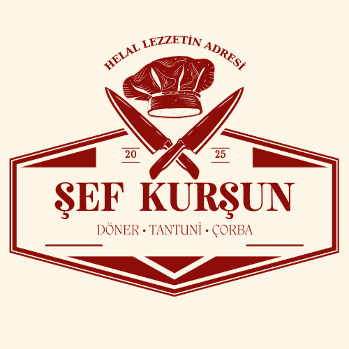

Döner · Tantuni · Ev Yemekleri
Özel soslu taze tavuk döner, sıcak lavaşta.
Bol soslu, özel baharatlı ve patates kızartmalı Antakya usulü dürüm keyfi.
Tereyağlı pirinç pilavının üzerinde nar gibi kızarmış nefis tavuk döner, patates kızartması ve salata ile.
Pamuk gibi pişmiş tavuk eti, sumaklı soğan, domates ve taze maydanozla.
Dilimlenmiş enfes tavuk tantuni dürümü, süzme yoğurt ve kızgın tereyağ sosuyla.
Geleneksel sacda pişen et, soğan ve domatesle incecik lavaşta.
Sıcak sacdan tabağa; yoğurt yatağında tereyağlı ve soslu et tantuni şöleni.
Günün özel hazırlanan ev yemeği tabağı.
Süzme esnaf usulü, tereyağı gezdirilmiş sıcacık şifa kaynağı.
Didiklenmiş tavuk eti ile hafif acılı, kıvamlı geleneksel arabaşı.
Sarımsak, sirke ve limon sosuyla harmanlanmış, bol etli geleneksel paça. Not: Sadece Pazartesi günleri hazırlanmaktadır.
Lokum gibi pişmiş, etli ve kıvamlı tam bir anne yemeği.
Etli, eski usul kıvamında pişmiş iri kuru fasulye.
Zeytinyağlı taze ve hafif domates soslu taze fasulye.
Tane tane dökülen, bol tereyağlı klasik pirinç pilavı.
Yemeklerin yanına buz gibi, taze ve kıvamlı kase yoğurt.
Taze salatalık, nane ve zeytinyağı ile buluşan serinletici lezzet.
Taze mevsim yeşillikleri ve domates ile hazırlanan söğüş salata.
Sacda pişen, sıcacık sade bazlama.
Usta elinde açılan hamur, baharatlı patates harcıyla sacda pişirilir.
Usta elinde açılan hamur, sıcağıyla eriyen bol kaşar peyniriyle.
Usta elinde açılan hamur, çökelek ve taze yeşillikle.
Usta elinde açılan hamur, yöresel deri peyniriyle.
El açması sac böreği, baharatlı patates harcıyla.
El açması sac böreği, taze ıspanak ve soğan harcıyla.
El açması sac böreği, çökelek peyniriyle.
El açması sac böreği, bol kaşar peyniriyle.
El açması sac böreği, yöresel deri peyniriyle.
Ispanak ve eriyen kaşar peynirinin mükemmel uyumu.
Baharatlı patates ve eriyen kaşar peynirli lezzet ikilisi.